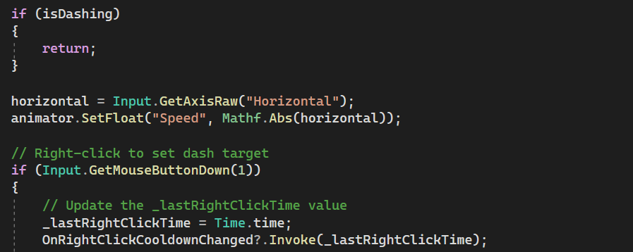

Coding

Now don't get scared just yet- while coding is definately difficult, with time and practice it begins to seem more and more intuitive. Let's talk about how we can create a simple player movement script. If you remember anything from your calculus class, you'll know that the position of anything, for example an apple, can be represented by a graph. The velocity is just the change in position, and acceleration is just the change in velocity. But what does this mean in the context of movement? Well if you want your player to move, i.e. have velocity, you need to create a function of position, attatch it to a game object (like the player), and tell the game obect to have a change in position when a certain key is pressed (ex. WASD). Similarly, when the player jumps, that's a simple parabola that can be codded as well. There are a lot of nitty gritty details that we can get into, but for now, the basics of a movement script are shown.

Be patient with yourself when developing your code. There are now many resources both online and using AI that can help you get started. It's important however not to be completely reliant on theses sources because eventually you will get to a point that what you want to do may be more advanced that what AI can provide you with, or maybe to specific to find an internet tutorial. To combat this, when you get code from either source, read that code over and over until you feel confident you understand everything you are being provided with. The code example below was developed using AI, but altered to fix errors and better fix in the context of a game.
